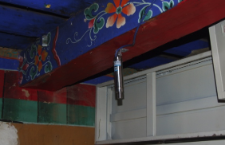
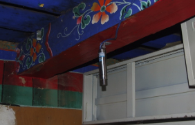

Projects
Spanning the globe, each of our projects embodies our commitment to quality, innovation, and local culture
Austin, Texas
This project involved a lot of compliance measures to make sure we followed industry standards adequately. Successfully completed on time and within budget, it’s a great example of delivering on our promise of quality work while ensuring absolute client satisfaction. Want to learn more about similar projects? Get in touch today
Austin, Texas
While working on this project, we were very poignant about the materials and footprint of our work. We worked together with the client in order to manage their expectations and deliver the kind of results they desired. At SEFBO Construction, our goal is to bring our client’s vision to life while working with them every step of the way.
Samsung Austin Semiconductor Austin,Texas
SEFBO-EMR construction was awarded the steel structure fabrication and erection. They worked on:
- Connecting mechanical building and clean room
- Calibrating with lemon sea rese association
- The deep foundation structural system supporting the clean room facility
Alamo Park Sports Pavilion
Erection of owner provided, prefabricated, open sided, metal panel roof structure. Structure is approx 85’ wide x 113’ long x 26’ high with wind swept steel columns mounted on concrete piers. Install Piers. Provide and install electrical lighting and associated system. Relocate two(2) existing metal light poles to locations designated by owner, install concrete piers and necessary underground electric conduit and wiring.
Capital Metropolitan Transportation Authority
Repair and reinstallation of portions of the existing standing seam metal roof at ACC Cypress Creek Campus in Cedar Park, Texas. And reworking or replacing of existing flashing conditions, as well as temporary weather protection of uncovered portions of the roof.

Austin Community College, Texas
Repair and reinstallation of portions of the existing standing seam metal roof at ACC Cypress Creek Campus in Cedar Park, Texas. And reworking or replacing of existing flashing conditions, as well as temporary weather protection of uncovered portions of the roof.
Chinese Church Parking Lot, Texas
Parking Expansion and Drainage Improvement.

Austin-Bergstrom Internal Airport
This was a $650,000,000 project in which the original US-Bergstrom air base was converted into a commercial international airport. SEFBO-EMR construction was awarded many projects, such as:
- Roadway and parking sign involving major steel fabrication and erection
- Security camera and other video-audio system erection
- Installation of Passengers bridge connecting terminal building and plane entrance

Flaming Gorge, Dutch John, Utah
This pipeline bridge has two main towers of approximate 200-foot high. The length of span is approximate 1,920 ft. from tower to tower. The suspension system is composed of two main cable of 3/4"Ø, sixty-three (63) suspenders of Ø1"Ø and two 3/4"Ø stay cables, attached at each pipe support cradle between the two main towers.

Redfield, Arkansas
LEGAL DESCRIPTION: Section: 6, Township: 2 South, Range: 10 West, LENGTH OF SPAN: 1760’ (Tower/Tower)
Jackson County, Arkansas
This pipeline bridge has two main towers of approximate 150’ high. The length of span is approximate 1,000 ft. from tower to tower. The bridge is composed of two main cable of Ø 2 1/4 " and thirty-three (33) suspenders of Ø 5/8". At each end of the crossing, there is one pair of back-stay wind cable of 1 3/8" diameter and there are four (4) pairs of wind cable above river with the following diameters: 5/8 ", 3/4 ", 7/8", and 1".

Grand Tower, Illinois
This is a pipeline bridge composed of two main towers. The length of span is approximate 2,150 ft. from tower to tower. The bridge is composed of two (2) sets of 12 cables measuring 2 inches in diameter each cable. There are 85 sets of suspenders measuring 5/8 inch in diameter, with suspenders at the towers measuring 7/8 inch in diameter. There are 25 feet between suspenders. There are two (2) sets of two (2) wind cables measuring 2 ½ inches each cable in diameter.
Benson, Arizona
LENGTH OF SPAN: 1,000 ft. (Approximately), tower to tower Main tower High: 170 ft.
Summit Bridge, Delaware
Pipeline bridge crossing the canal connecting the Chesapeake Bay and Delaware Bay. The suspension system consists of a bridge supporting one 12-inch pipeline transporting natural gas. The main span of the bridge is 1,280 feet, from tower to tower, and anchor span approximately 120 feet at south end and 110 feet at north end of the bridge. The towers are “A” frame structures with 14’’ diameter pipe legs, with main cable consisting of one 2-5/16 inch diameter galvanized bridge strand from tower to tower. SEFBO had designed and constructed two new frame (one at each side) to restore the existing structure from slanted position to its originally designed one. The tower tops were reinforced to resist the external fprce.

Effie, Louisiana
Suspension bridge. There is one (1) main cable of 2 5/8" and 50 sets of main suspenders measuring 5/8" (strand) in diameter. Four (4) sets of 1 1/8" in diameter on each side of the river. SEFBO repaired the suspension system with a pair of cables to replace the original one cable.

Krotz springs
Rehabilitation of Atchafalaya Pipeline bridge. SEFBO designed and constructed the new wind cable system to against the wind which reached 150 miles/hour.


 
